Consolas
Tablero con mandos, teclas e indicadores desde el que se controla una máquina: desde la consola se dirige el tráfico de la población; consola de videojuegos.
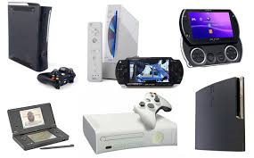
Pie de página
Game Boy
Es una serie de videoconsolas portátiles alimentadas con pilas y comercializadas por Nintendo. La Gameboy es oficialmente la tercera consola mas vendida del mundo y por encima de la Playstation
. Comenzó como un modelo de consola parcialmente experimental, y en su primer año vendió relativamente poco (la Mega Drive de SEGA, por ejemplo, vendió 2 millones de consolas en su primer año en el mercado),alrededor de los 4 millones de unidades en todo el mundo.
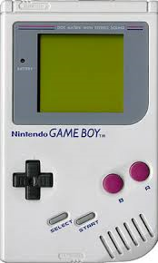
Pie de página
Driver
Driver es una serie de videojuegos de acción y conducción desarrollada por Reflections Interactive (ahora Ubisoft Reflections), publicada originalmente por GT Interactive y posteriormente por Atari. La serie comenzó en 1999 y en la actualidad se han lanzado cinco juegos principales y dos spin-off. La serie ha vendido más de 16 millones de copias en todo el mundo.
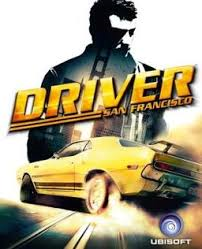
Pie de página
Kirby
Su primer juego salió para Game Boy y ha tenido juegos en cada uno los sistemas de Nintendo. Su habilidad especial es la de absorber a los enemigos y copiar sus ataques, similar a Ditto de Pokémon. La habilidad de copiar los ataques de los oponentes no se le otorgó al personaje hasta la segunda entrega de este juego. Al comienzo sólo los absorbía y lanzaba en forma de estrella. Su habilidad de copiar ataques le da capacidad y poder para afrontar cualquier amenaza. También tiene poderes ilimitados y ocultos que provienen de la Warp Star.
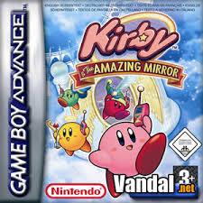
Pie de página
Tony Hawk's Pro Skater 2
Su primer juego salió para Game Boy y ha tenido juegos en cada uno los sistemas de Nintendo. Su habilidad especial es la de absorber a los enemigos y copiar sus ataques, similar a Ditto de Pokémon. La habilidad de copiar los ataques de los oponentes no se le otorgó al personaje hasta la segunda entrega de este juego. Al comienzo sólo los absorbía y lanzaba en forma de estrella. Su habilidad de copiar ataques le da capacidad y poder para afrontar cualquier amenaza. También tiene poderes ilimitados y ocultos que provienen de la Warp Star.
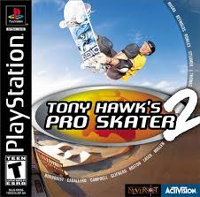
Pie de página
Breakout
Breakout es un videojuego arcade desarrollado por Atari, Inc. y lanzado al mercado el 13 de mayo de 1976. Fue creado por Nolan Bushnell y Steve Bristow, influenciados por el videojuego de 1972 Pong, también de Atari. En 1978 se distribuyó la versión para el Atari 26002 y en 1983 la versión para MSX. Posteriormente fue mejorado en videojuegos como el Super Breakout.
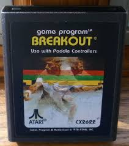
Pie de página
Pokémon Red y Blue
Breakout es un videojuego arcade desarrollado por Atari, Inc. y lanzado al mercado el 13 de mayo de 1976. Fue creado por Nolan Bushnell y Steve Bristow, influenciados por el videojuego de 1972 Pong, también de Atari. En 1978 se distribuyó la versión para el Atari 26002 y en 1983 la versión para MSX. Posteriormente fue mejorado en videojuegos como el Super Breakout.
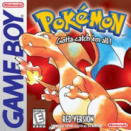
Pie de página
GameCube
Es la última videoconsola creada por Hiroshi Yamauchi ya que éste abandonó la empresa. y la que crea Nintendo para la sexta generación. Es la sucesora de la Nintendo 64 y la predecesora de la Wii.
Sus principales características son su procesador central basado en un IBM PowerPC (tecnología previa utilizada en computadoras personales y portátiles), y su procesador gráfico desarrollado por ATI. Nintendo, por primera vez, prescinde del cartucho (ROM) como formato de almacenamiento, y adopta un formato óptico propio, el Nintendo Optical Disc. El nombre «GameCube» se debe a que el sistema tiene la forma parecida a la de un cubo.
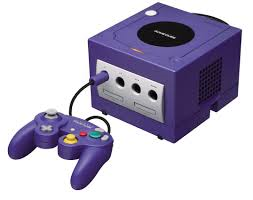
Pie de página
Metroid Prime
Metroid Prime es un videojuego de acción-aventura en primera persona con componentes de disparos y plataformas, desarrollado por Retro Studios y distribuido por Nintendo para la consola Nintendo GameCube entre los años 2002 y 2003.1 Es el primero de la serie Metroid en ser tridimensional y usar la vista en primera persona.
El juego describe las aventuras de la cazarrecompensas Samus Aran en el planeta Tallon IV en su lucha contra los piratas espaciales y sus experimentos biológicos. En su aventura también tendrá acceso a los textos de la antigua civilización de los chozo, los antiguos habitantes del planeta, ahora extintos debido al impacto de un meteorito de phazon. A través de las cinco regiones que forman el planeta, Samus debe recuperar las partes perdidas de su equipo y los doce artefactos chozo necesarios para resolver el misterio que rodea al phazon, nexo común que une las tramas.

Pie de página
Ultimate Spider-Man
El juego empieza con un resumen de Spider-Man (Peter Parker) explicando que su padre y el de Eddie Brock trabajaron juntos para Industrias Trask para encontrar una manera de curar el cáncer; sin embargo, murieron en un accidente aéreo antes de completar su traje "Veneno", que curaría al portador.
Spidey irrumpe en la bóveda que contiene la sustancia Veneno y es cubierto por una porción de ella, creando su traje negro. Ésta mejoró sus habilidades sobrehumanas normales a nuevos niveles, pero el traje intentó consumirlo y finalmente lo dejó drenado por la experiencia. Eddie descubre más tarde lo que hizo Peter y toma el resto del traje Veneno para sí mismo, tomando el nombre para sí mismo...

Pie de página
GoldenEye
GoldenEye: Agente Corrupto es un videojuego de James Bond distribuido por Electronic Arts para PlayStation 2, GameCube, Xbox y Nintendo DS. Este es el primer juego en el cual el jugador no controla a 007, sino que a un aspirante agente 00 llamado GoldenEye, quien es reclutado por Auric Goldfinger, un miembro de SPECTRE, para asesinar a su rival el Dr. Julius No. Varios personajes de otras películas de James Bond como Pussy Galore, Oddjob, y Xenia Onatopp hacen apariciones dentro del juego. En el juego se encontraran niveles familiares como la Hoover dam, Hong Kong, Fort Knox, etc.
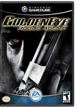
Pie de página
Gameboy Advance
Es una popular consola de videoNintendo, fabricada desde marzo de 2001 hasta 2008.
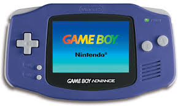
Pie de página
Yu-Gi-Oh
Yu-Gi-Oh The Eternal Duelist Soul es un videojuego de Yu-Gi-Oh! para la plataforma Game boy Advance. El juego es similar a las reglas estándar de duelo, excepto que el Side Deck solamente permite 15 cartas, y es más por conveniencia de tener a mano a las cartas útiles para tu Deck Principal que para intercambiar cartas entre los Duelos, ya que casi todos los Duelos contra el CPU son los Duelos individuales en lugar de un Match (con algunas excepciones en los eventos del juego).
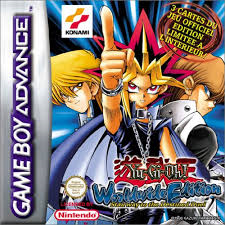
Pie de página
Supercard
Supercard es un modchip flasheable fabricado para las consolas Nintendo DS, Nintendo DSi, Nintendo DS Lite, Nintendo DSi XL, Nintendo 3DS y GameBoy Advance, que ofrece multitud de mejoras en el sistema en el que se instalan.
Las funciones más importantes de la Supercard son las de reproducir películas y música, ver fotografías, leer libros e-book e incluso la utilización de aplicaciones propias, convirtiendo la consola desde la que se utilice en un auténtico sistema multimedia. Los archivos se reproducirán directamente desde una tarjeta de memoria CompactFlash que se ha de utilizar conjuntamente con la Supercard.
La Supercard también es capaz de reproducir copias de seguridad de aquellos videojuegos almacenados en la tarjeta de memoria, sin necesidad de la utilización del cartucho original. Esta funcionalidad ha sido causa de múltiples batallas legales entre Nintendo y los creadores de la Supercard, sin que ésta haya sido prohibida nunca en nuestro país.
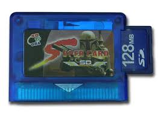
Pie de página
Metroid Fusion
Metroid Fusion es el cuarto videojuego de la saga Metroid, y el primero en haber salido para Game Boy Advance. Es la secuela directa del aclamado Other M de Wii y situado el último, cronológicamente, de toda la saga.
Metroid Fusion representa una nueva dirección de la serie, eliminando el desarrollo no lineal, introduciendo un ordenador como personaje no jugable, que te dice qué hacer y a dónde ir (haciendo que la técnica de saltarse escenas de un videojuego sea más difícil de realizar).

Pie de página
Super Mario Bros
Super Mario Bros. fue el juego que popularizó al personaje de Mario, convirtiéndolo en el ícono principal de Nintendo, y uno de los personajes más reconocidos de los videojuegos, así como su hermano menor Luigi. Además, presentó por primera vez a la Princesa Peach Toadstool, Toad, Bowser, entre otros personajes. Este juego es considerado el primer videojuego de plataformas de desplazamiento lateral de Nintendo y se ha convertido en un hito debido a la trascendencia de su diseño y papel en la industria de los videojuegos.
Su lanzamiento fue el primer gran récord de ventas posterior a la crisis de la industria de los videojuegos de 1983 (alcanzando más de 10 millones de cartuchos vendidos), por lo que popularizó, en cierta manera, a la consola NES. En 1999 fue reconocido como uno de los videojuegos más vendidos de todos los tiempos.Shigeru Miyamoto su creador, relata la existencia de Super Mario Bros. debido a que viajaba a un tren donde le gustaba mirar por la ventana, y se imaginaba que estaba allí saltando afuera.

Pie de página
Tomb Raider
Tomb Raider: Legend, es el séptimo juego de la serie de Tomb Raider. Publicado por Eidos Interactive, es el primer videojuego de la serie que no ha sido desarrollado por Core Design ya que esta empresa quebró, dejando a la saga en manos de Crystal Dynamics. Fue lanzado en Europa el 7 de abril de 2006 y en Estados Unidos el 11 de abril de 2006 para PlayStation 2, PC, Xbox y Xbox 360. En el proyecto winehq (wine Head Quarters) es uno de los juegos que está clasificado como "platinum" por lo que puede jugarse sin fallas en linux mediante wine.
La versión para PlayStation Portable fue publicada el 20 de junio de 2006 y la versión para GameCube, Game Boy Advance y Nintendo DS fue lanzada en noviembre de 2006 y la versión para móviles en diciembre de 2006.

Pie de página
Computadora (PC)
Pie de página
Minecraft
Minecraft es un videojuego independiente de construcción, de tipo «mundo abierto» o sandbox creado originalmente por el sueco Markus «Notch» Persson,9 y posteriormente desarrollado por su empresa, Mojang AB. Fue lanzado públicamente el 17 de mayo de 2009 en su versión alfa, después de diversos cambios fue lanzada su versión completa el 18 de noviembre de 2011.
Un mes antes del lanzamiento de su versión completa, el 18 de octubre de 2011, fue estrenada una versión para Android, y el 17 de noviembre del mismo año fue lanzada la versión para iOS. El 9 de mayo de 2012 fue lanzada la versión del juego para Xbox 360, Xbox Live Arcade y PS3. Todas las versiones de Minecraft reciben actualizaciones constantes desde su lanzamiento. El 11 de noviembre de 2014, Minecraft lanzó su edición para el apartado de PlayStation Vita, desarrollada por Mojang y 4J Studios, esta versión presenta las mismas actualizaciones y similares características que las otras versiones de consola; además, cuenta con el sistema de venta cruzada, es decir que al comprar la versión de PlayStation 3 se adquiere también la de PlayStation Vita. Actualmente se han vendido más de 54 millones de copias.
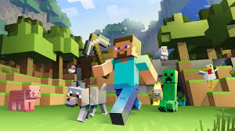
Pie de página
Jugabilidad
Minecraft es un juego de mundo abierto, por lo que no posee un objetivo específico, permitiéndole al jugador una gran libertad en cuanto a la elección de su forma de jugar, a pesar de ello el juego posee ciertos logros que pueden realizarse.El modo de juego predeterminado es en primera persona, aunque los jugadores tienen la posibilidad de cambiarlo a tercera persona. El juego se centra en la colocación y destrucción de bloques, siendo que este se compone de objetos tridimensionales cúbicos, colocados sobre un patrón de rejilla fija. Estos cubos o bloques representan principalmente distintos elementos de la naturaleza, como tierra, piedra, minerales, troncos de un árbol, entre otros. Los jugadores son libres de desplazarse por su entorno y modificarlo mediante la creación, recolección y transporte de los bloques que componen al juego, los cuales solo pueden ser colocados respetando la rejilla fija del juego.
Al inicio del juego, el jugador se encuentra en un mundo generado mediante un algoritmo, lo que permite que este sea infinito y nunca se generen dos mundos iguales.El jugador es libre de desplazarse por el terreno, conformado por distintos biomas, entre los que se encuentran desiertos, sabanas, selvas, océanos, llanuras, tundras, etc. El juego posee su propio ciclo de tiempo de día y noche, siendo que un día en el juego equivale a 20 minutos en la realidad.
El juego también incluye animales y personajes no jugables, denominados en su conjunto como criaturas (mobs en inglés), estas criaturas pueden ser pacíficas, como cerdos, caballos, gallinas, ovejas, etc. de las cuales el jugador puede obtener alimento y recursos fácilmente; pero también aparecen en el juego criaturas hostiles, como zombis, arañas gigantes, esqueletos, etc., estas criaturas únicamente aparecen en la noche o en zonas oscuras, entre estos monstruos están las criaturas únicas del juego, como los creepers, que explotan al estar cerca del jugador, criaturas neutrales como los enderman, que pueden recolectar bloques y teletransportarse e incluso criaturas jefe (boss en inglés) como el wither. También hay animales domesticables como el lobo y criaturas que se pueden invocar como el gólem y golem de nieve.
El mapeado no se genera por completo simultáneamente, sino que está dividido en chunks («trozos», «pedazos» traducido literalmente al español, pero sin adaptación oficial) de 16 × 16 bloques en horizontal. Los chunks cercanos al jugador se cargan en la memoria. A medida que este se desplaza, se generan y añaden nuevos chunks al mapa.
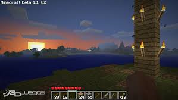
Pie de página
Los Sims 4
Es el apartado que ha sufrido la mayor renovación tecnológica respecto a entregas anteriores. Por primera vez se permite modelar al Sim como si fuera una figura de arcilla, haciendo clic sobre cualquier zona del cuerpo que se quiere cambiar y arrastrando el ratón para modificarla al gusto. Prácticamente cualquier zona del cuerpo se puede modificar de esta forma, desde las orejas y el tamaño de la frente hasta el tamaño de los pies. Se tienen, sin embargo, dos deslizadores básicos, uno que define el tamaño muscular, ajustándose automáticamente el fibrado y marcado abdominal del Sim y otro que define su grasa corporal. Y también hay una serie de configuraciones corporales predefinidas que se pueden escoger como en entregas anteriores. Sin embargo, desaparecen opciones presentes en la entrega anterior, como la posibilidad de configurar libremente el color de la ropa, el pelo o los ojos, volviendo a tener que escoger entre una colección limitada de colores para cada caso.
En cuanto a la ropa, en el momento del lanzamiento se podía definir los atuendos informal, para ropa cotidiana; formal, ropa de etiqueta; deportivo, ropa para hacer ejercicio; para dormir, ropa interior y pijamas; de fiesta, ropa que se utilizará para salir de noche, más desenfadada que la de etiqueta pero más elegante que la cotidiana. Con el parche posterior en el que se añadieron al juego las piscinas, se añadió el traje de baño como ropa configurable.

Pie de página
Assassin's Creed
Es un videojuego de acción-aventura y sigilo de ficción histórica, desarrollado por Ubisoft Montreal. El juego fue lanzado a nivel mundial para PlayStation 3 y Xbox 360, comenzando en América del Norte el 16 de noviembre de 2010. Más tarde fue lanzado para Microsoft Windows en marzo de 2011, seguido por una versión para OS X en mayo de 2011.
Es la tercera entrega de la serie de Assassin's Creed y el segundo episodio o secuela de Assassin's Creed II. Cuenta nuevamente con Ezio Auditore da Firenze como protagonista, quien ahora es un legendario Maestro Asesino, que lidera a su recién fundada hermandad en la cacería de los Templarios en Roma. La historia de Assassin's Creed: Brotherhood tiene lugar inmediatamente después de la trama de Assassin's Creed II, con el asesino del siglo XVI en Italia, Ezio Auditore y su búsqueda para restaurar la orden de los asesinos y destruir a sus enemigos: la familia Borgia. Cruzándose con estos hechos históricos, suceden las actividades de hoy en día del protagonista de la serie Desmond Miles, que revive los recuerdos de su antepasado Ezio para encontrar una manera de luchar contra los enemigos de los Asesinos, los templarios, y para evitar el apocalipsis de 2012.

Pie de página
Diablo III
Es la primera expansión del RPG Diablo III. Fue revelado al público en la feria de videojuegos Gamescom 2013.Fue lanzado para PC y Mac el 25 de marzo de 2014. Blizzard ha declarado que la expansión tendrá versiones para consolas.El contenido del paquete de extensión se lanzará como parte de Diablo III: Ultimate Evil Edition, versión para PlayStation 4 que se programa para lanzarse en 2014. Esa edición del juego también se está desarrollando para el Xbox One, pero todavía no se programa su salida al mercado.

Pie de página
Dark Souls 2
Es un videojuego de rol de acción que tiene lugar en un mundo abierto, desarrollado para Microsoft Windows, PlayStation 3 y Xbox 360 por From Software. From Software también distribuye el juego en Japón, mientras que Namco Bandai Games lo hace para otras regiones.
Dark Souls II fue anunciado como la secuela de Dark Souls en los Spike Video Game Awards el 7 de diciembre de 2012. Hidetaka Miyazaki, quien fue el director de Demon's Souls y Dark Souls, no regresó para cumplir ese rol en Dark Souls II. En lugar de eso actuó como el supervisor, y el juego fue dirigido por Tomohiro Shibuya y Yui Tanimura.Miyazaki indicó que no habría ninguna conexión entre las historias de Dark Souls y Dark Souls II, aunque sí tendrían lugar en el mismo mundo fantástico. El juego utiliza servidores multijugador dedicados.

Pie de página
The simpsons
Es un videojuego arcade producido en el año 1991 por la empresa japonesa Konami. El juego está basado en los personajes de la serie del mismo nombre.
El señor Burns, junto a unos maléficos secuaces (entre los que se encuentra el señor Smithers) roban un diamante muy valioso. Pero, la familia Simpson se encuentra muy cerca del lugar y mientras el señor Burns y sus secuaces salen de la joyería de donde robaron el diamante, el señor Smithers (que tenía el diamante) choca contra Homer y el diamante cae en la boca de Maggie. Debido a ello, el señor Smithers, que estaba muy apurado para irse rápido del lugar, secuestra a Maggie. El juego tiene 8 niveles que los integrantes de la familia Simpson recorren mientras intentan recuperar a su bebé.

Pie de página
Pacman
Es un videojuego arcade creado por el diseñador de videojuegos Toru Iwatani de la empresa Namco (basado supuestamente en la forma de una pizza con un trozo faltante), y distribuido por Midway Games al mercado estadounidense a principios de los años 1980.
Desde que Pac-Man fue lanzado el 21 de mayo de 1980, fue un éxito. Se convirtió en un fenómeno mundial en la industria de los videojuegos, llegó a tener el Récord Guiness del videojuego de arcade más exitoso de todos los tiempos con un total de 293.822 máquinas vendidas de 1981 a 1987 y acabó con el dominio de Space Invaders, donde la 'acción predominante era shoot-em-up (disparar a todos)' para reemplazarla por un formato único, más humorístico y poco violento que gustó a muchísimas personas.
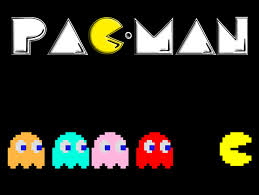
Pie de página
Tumblepop
Tumblepop es un videojuego de plataformas arcade desarrollado por Data East y lanzado en 1991. Se considera una obra clásica de culto, pero parece pedir prestados algunos elementos del Snow Bros lanzado el año anterior. También tiene pequeñas características del Pang.
El juego implica a uno o dos cazadores de fantasmas que pueden aspirar monstruos hacia a dentro de sus bolsas de aire y escupirlos en una bola, eso se puede utilizar como arma cuando golpea a otros enemigos y acaba recorrido dando recompensas (monedas, diamantes, rubíes). El diagrama del juego fue inspirado posiblemente por la película de los Cazafantasmas.
Los controladores dependen de dos botones y la palanca de mando. El botón principal sirve para activar la aspiradora, al mantener el botón principal presionado logramos aspirar a las criaturas y se introduce en nuestra bolsa de aire, una vez que soltamos el botón expulsamos a la o las criaturas que tengamos en nuestro bolsa de aire, también tenemos un tiempo determinado para mantenerlas dentro, sino las mantenemos dentro de nuestra bolsa de aire mucho tiempo, puede que explote costándonos una vida.
El botón secundario sirve para saltar, podemos saltar de un piso a otro (hacia arriba o hacia abajo), y también de un lado a otro, una función que se destaca es que al mantener la palanca hacia abajo (agachado) y presionando el botón de salto, logramos lanzarnos del piso (hacia abajo) en el que estamos hacia eludiendo obstáculos o disparos.
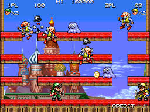
Pie de página
San Andreas
Es un videojuego de acción-aventura de mundo abierto desarrollado por Rockstar North y publicado por Rockstar Games. El videojuego, que precedió a Grand Theft Auto Advance, es el quinto título de la serie Grand Theft Auto, y el tercero de la misma en poseer gráficos 3D. Distribuido por Take-Two Interactive, San Andreas fue lanzado de forma exclusiva para PlayStation 2 en octubre de 2004 y posteriormente se publicaron versiones para Xbox y Microsoft Windows; en aras del tiempo, San Andreas recibió ediciones para otras plataformas, tanto en dispositivos móviles como en videoconsolas de séptima generación.
La historia del juego ocurre en San Andreas, un estado ficticio que contiene a tres ciudades metropolitanas: Los Santos, San Fierro y Las Venturas; las tres, basadas fuertemente en las ciudades de Los Ángeles, San Francisco y Las Vegas, respectivamente. Ambientado en 1992, el juego cuenta la historia de Carl Johnson, quien decide volver a Los Santos tras cinco años de haberse establecido en Liberty City; después de enterarse del asesinato de su madre ocurrido durante un confuso tiroteo. Al llegar, CJ intenta restablecer su antigua banda y su familia, mientras desvela poco a poco la verdad detrás de la muerte de su madre. Su trama se basa, de modo estrecho, en sucesos como la rivalidad entre las pandillas Bloods y Crips, la epidemia de crack, el escándalo Rampart y los disturbios de Los Ángeles de 1992.

Pie de página
Nintendo 3DS
The legend of zelda
Es una serie de videojuegos de acción-aventura creada por los diseñadores japoneses Shigeru Miyamoto, Takashi Tezuka y Eiji Aonuma, y desarrollada por Nintendo, empresa que también se encarga de su distribución internacional. En los distintos títulos que la componen se describen las heroicas aventuras del joven guerrero Link, que debe enfrentarse a peligros y resolver acertijos para ayudar a la Princesa Zelda a derrotar a Ganondorf y salvar su hogar, el reino de Hyrule.
A partir del lanzamiento del primer juego en 1986, The Legend of Zelda ha logrado una notable popularidad acompañada de críticas favorables en la industria de los videojuegos, traducidas en un cuantioso éxito comercial a nivel internacional—hasta octubre de 2014, se calculan más de 79 millones de copias vendidas de sus juegos; para las ventas específicas de cada título de la franquicia, véase la sección Comercial—. La entrega más reciente es The Legend of Zelda: Majora's Mask 3D, lanzada en 2015 para la consola portátil New Nintendo 3DS. A principios de ese año, Nintendo reveló sus planes de producir un nuevo título de Zelda para Wii U.

Pie de página
Animal crossing
Es una franquicia de videojuegos de simulación de vida desarrollada y publicada por Nintendo, en el que el jugador vive en un pueblo habitado por animales antropomórficos, llevando a cabo diversas actividades. La serie destaca por su sistema de juego abierto y su amplio uso del reloj y el calendario internos en el sistema para simular el paso real del tiempo, es decir, que el juego se desarrolla en tiempo real (1s=1s).
En total son seis juegos, aunque dos de ellos se vendieron tan solo en Japón, cada uno para Nintendo Game Cube, Nintendo DS, Wii y Nintendo 3DS. Todos los juegos se crearon para consolas de sobremesa de Nintendo, a excepción de Animal Crossing: Wild World y Animal Crossing: New Leaf.
El juego ha sido a la vez un éxito comercial y para la crítica, y ha vendido 16,49 millones de unidades en todo el mundo.

Pie de página
Resident evil
Originalmente publicado para la consola PlayStation, ha sido posteriormente adaptado para Microsoft Windows, Sega Saturn y Nintendo DS.
En 2002, se hizo una versión para Nintendo GameCube con nuevos gráficos, adaptaciones de voz y añadiendo importantes cambios al juego. En 2009 se hizo otra adaptación del videojuego, pero esta vez para Wii.
Fue uno de los primeros juegos en ser catalogado como survival horror, debido a la mecánica de juego, los escenarios y ambientes, y el tipo de cámara fija en tercera persona, subgénero éste acuñado por videojuegos como Alone In The Dark. La inspiración para Resident Evil fue un juego anterior de Capcom llamado Sweet Home. Shinji Mikami se encargó inicialmente de hacer un juego de terror en una mansión embrujada como Sweet Home, aunque el estilo de juego está en parte inspirado en Alone In The Dark.

Pie de página
Lego batman 2
Es un videojuego de Lego y DC comics estrenado en Junio de 2012, y es la secuela de Lego Batman: El Videojuego (2008). Fue desarrollado por Traveller's Tales y comercializado por Warner Bros. Interactive Entertainment. Hay versiones para PlayStation 3, PlayStation Vita, Nintendo 3DS, Wii, Nintendo DS, Xbox 360, y Microsoft Windows. Una gran variedad de personajes de DC Comics dentro y fuera de la continuidad de Batman serán personajes jugables. Lego Batman 2: DC Super Heroes también cuenta con diálogo, el segundo juego Lego de Traveller's Tales en hacerlo.

Pie de página
Star fox 64 3D
Star Fox 64 3D es un remake de Star Fox 64, el popular juego de Nintendo 64. Fue reconstruida en 3D estereoscópico para el Nintendo 3DS. Fue lanzado el 9 de septiembre de 2011.
Mientras que la trama es prácticamente el mismo que el original, que tiene sus propias diferencias, incluyendo actuación de voz, y algunos gráficos visuales. El juego cuenta ahora con el mismo nombre en todos los territorios en lugar de la versión original en Europa y Australia, ya que Nintendo ya ha hecho con los derechos sobre el título Star Fox.

Pie de página
Nintendo wii
Pie de página
Splatoon
Es un videojuego de disparos en tercera persona desarrollado y publicado por Nintendo para Wii. Salió a la venta el 28 de mayo de 2015 en Japón y el 29 de mayo en Europa y América. En Splatoon, el jugador dispara tinta de colores a los enemigos, así como a las superficies del escenario, además, el personaje del jugador puede nadar a través de la tinta de su color para esconderse de los enemigos, aumentar la velocidad de movimiento, o subir por las paredes. En el modo multijugador en línea, dos equipos compiten para cubrir la mayor cantidad de territorio con la tinta de su color, mientras que en el modo campaña para un solo jugador, el jugador debe luchar contra un ejército de pulpos enemigos que utiliza su propio arsenal de armas de tinta. El título es una composición de las palabras en inglés "splat" (plaf) y "platoon" (pelotón).
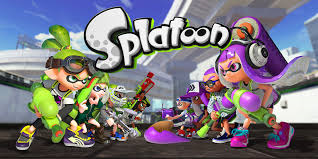
Pie de página
Just dance 2015
Es el sexto juego de las series de Just Dance, desarrolladas por Ubisoft. Su lanzamiento para las consolas de la generación actual fue el 21 octubre del 2014 en los Estados Unidos. Fue anunciado oficialmente en la conferencia de prensa de Ubisoft en la E3 2014 el 9 de junio del 2014 tras las esperadas promociones que utilizaban el hashtag #June9 como medio de anuncio desde las redes sociales. Es el segundo juego en las series que tiene un año en el título en vez de un número, el primero fue Just Dance 2014.

Pie de página
Metroid prime trilogy
Se trata de un recopilatorio que recoge los títulos Metroid Prime (originalmente lanzado para Nintendo GameCube el 19 de noviembre de 2002), Metroid Prime 2: Echoes (Nintendo GameCube, 15 de noviembre de 2004) y Metroid Prime 3: Corruption (Wii, 27 de agosto de 2007).
Es el undécimo título lanzado de la serie, precedido por Metroid Prime 3: Corruption y seguido por Metroid: Other M, título de acción desarrollado por Nintendo y Team Ninja (Tecmo). Es, hasta la fecha, el último título de Metroid desarrollado por Retro Studios quienes, no obstante, podrían no abandonar la serie según las palabras del CEO de la compañía, Michael Kelbaugh, y del productor de la serie, Kensuke Tanabe. El estudio se alejó de la saga para trabajar en Donkey Kong Country Returns (Wii).

Pie de página
Devil´s Thrid
Este es el primer juego desarrollado por Tomonobu Itagaki después de salir de Tecmo, en 2008, y formar su propio estudio de juegos, Valhalla Game Studios, con otros miembros del Team Ninja. El juego es distinto a los géneros Itagaki había trabajado anteriormente, como hack and slash y juegos de lucha, ya que este juego es un shooter en tercera persona.
Devil's Third cambió de motor de videojuego durante su desarrollo, debido a que la empresa responsable de su motor original se declaró en bancarrota. Desde entonces, Valhalla Game Studios han continuado el desarrollo mediante una adaptación del motor del desarrollador de videojuegos Relic Entertainment. Aunque la versión de Devil's Third para la Wii U no se confirmó en el momento, Itagaki informó que el juego se ejecutará perfectamente bien en el sistema. Devil's Third utiliza el motor Unreal Engine.
El juego fue anunciado originalmente por THQ, y fue planeado para ser lanzado en PlayStation 3 y Xbox 360. Este es también el primer juego Tomonobu Itagaki estaba desarrollando para la consola PlayStation 3. Tras el cierre de THQ, en 2013, los derechos de propiedad intelectual sobre Devil's Third fueron devuelto a Valhalla Game Studios y Nintendo se hizo de los derechos editoriales del título que se publicará para su propia consola.

Pie de página
Sonic colors
Sonic Colors quiere que los jugadores jueguen como al primer Sonic the Hedgehog, utilizando un movimiento similar al que aparece en Sonic Unleashed, ya que atraviesa cada planeta para rescatar a las víctimas del Dr. Eggman. La versión de Wii utilizará una mezcla de Perspectivas 2D y 3D, similar a las etapas de día del Sonic Unleashed, mientras que en la versión de Nintendo DS se podrá disfrutar de la doble pantalla que ofrece dicha consola portatil, similar a la de Sonic Rush.
La versión de Wii se puede jugar con el Wii Remote, Wii Remote y el Nunchuck, Wii Classic Controller, y Nintendo GameCube. La versión DS se controla principalmente por el d-pad y los botones, pero en algunas partes se puede utilizar la pantalla táctil. Durante el juego, los jugadores pueden usar el poder de la energía de color obtenidos a partir de los Wisps, para recorrer los ambientes y explorar nuevas áreas. Habrá un total de 8 Wisps en la versión de Wii y 6 en la versión de DS, con algunos Wisps exclusivos de cada versión. Junto con los Wisps blancos que dan impulso extra a Sonic, como por ejemplo: incluyen el láser Cian que permite a Sonic a rebotar en las superficies y viajar a través de líneas de alta tensión, el taladro amarillo que permite a Sonic excavar en superficies de tierra para llegar a zonas ocultas, y el cohete Naranja que impulsa a Sonic a través del cielo como un cohete.
Ocultos a lo largo de cada nivel se encuentran los 'anillos especiales" de color rojo que desbloquean contenido dentro del juego. La versión de Wii cuenta con el 'Sonic Simulator' un modo, en el que el/los jugador/es controlan a los 'Sonic-bots "a través de una serie de desafíos, ya sea solo o co-operativo, con dos Sonic-robots capaces de combinar los poderes de los distintos Wisps. La versión de DS cuenta con etapas especiales, similares a Sonic Rush, que requieren que los jugadores recolecten las esferas de un color determinado, así como el Time Attack y modos multijugador competitivo. El juego también contará con tablas de clasificación online para ambas versiones del juego.

Pie de página
PlayStation 4 - PS4
Pie de página
Grand Theft Auto V
Es un videojuego de acción-aventura de mundo abierto desarrollado por la compañía británica Rockstar North y distribuido por Rockstar Games. Fue lanzado el 17 de septiembre de 2013 para las consolas PlayStation 3 y Xbox 360.Posteriormente, fue lanzado para las consolas PlayStation 4 y Xbox One el 18 de noviembre de 2014 y finalmente para Microsoft Windows el 14 de abril de 2015. Se trató del primer gran título en la serie Grand Theft Auto desde que se estrenara Grand Theft Auto IV en 2008, el cual estrenó la «era HD» de la mencionada serie de videojuegos.
La primera información fue revelada por Rockstar Games el 25 de octubre de 2011 en la red social Twitter. El juego está ambientado en la ciudad ficticia de Los Santos, así como en las zonas que la rodean, basada en la ciudad de Los Ángeles y el sur de California. Por primera vez el juego se centraría en tres personajes distintos en vez de uno solo: Michael, Trevor y Franklin. El tráiler de estreno de Grand Theft Auto V se dio a conocer el 2 de noviembre de 2011.
Es el juego más caro de la historia, con un gasto de 265 millones de dólares, superando a su antecesor GTA IV —100 millones de dólares—. Sin embargo, Grand Theft Auto V recaudó 800 millones de dólares en las primeras 24 horas de su estreno, lo que lo convirtió en el videojuego que más dinero había recaudado en menos tiempo de toda la historia. Grand Theft Auto V, había recaudado en 3 días una recaudación récord de 1000 millones de dólares en ventas.

Pie de página
Call of Duty
Es una serie de videojuegos en primera persona (FPS), de estilo bélico, creada por Ben Chichoski, desarrollada principal e inicialmente por Infinity Ward, y distribuida por Activision. La franquicia comenzó para computadora personal y posteriormente fue expandiéndose hacia videoconsolas de sexta y séptima generación, tanto de sobremesa como portátiles, llegando así, a lanzar varios juegos derivados de forma paulatina con la serie principal. La serie inicialmente se ambientaba en la Segunda Guerra Mundial, relatando personajes y combates acaecidos durante dicho conflicto bélico. Esto fue cambiando hasta la actualidad, donde los argumentos suceden en ambientes contemporáneos y ficticios, como se puede ver en Call of Duty: Black Ops, en la Guerra Fría, como se ve en Call of Duty 4: Modern Warfare, Call of Duty: Modern Warfare 2, y Call of Duty: Modern Warfare 3 en la Tercera Guerra Mundial, y en los futuros tecnológicos en Call of Duty: Black Ops II y Call of Duty: Advanced Warfare. Los DLC son lanzados antes en las consolas Xbox.
La saga ha gozado de un gran éxito comercial y crítico, el cual ha ido aumentando desde su creación hasta la actualidad. Call of Duty ha logrado grandes ganancias en la industria de los videojuegos, vendiendo 55 millones de copias totales de sus juegos, recaudando más de 3 mil millones de dólares, creando además otros productos de la franquicia, incluyendo figuras de acción, juego de naipes y una mini-serie de comic books. De igual forma, la serie ha sido objeto de críticas y controversias desde su creación, hasta la actualidad.

Pie de página
Fifa
Cuando la saga comenzó a finales de 1993 se destacó por ser el primero en tener una licencia oficial de la FIFA. Las últimas cuotas de la saga contienen muchos de licencia exclusiva y los equipos de ligas de todo el mundo, como la Premier League y la Football League inglesa, Serie A italiana, Bundesliga alemana, y la Primera División de España, lo que permite el uso reales de las ligas, clubes y nombres y semejanzas de jugadores dentro de los juegos.
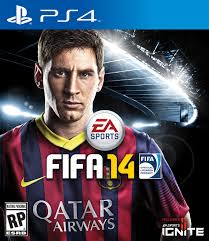
Pie de página
Mortal Kombat x
Mortal Kombat X (abreviado MKX) es un videojuego de peleas creado por Ed Boon, desarrollado por NetherRealm Studios y publicado por Warner Bros. Interactive Entertainment, fue anunciado en junio de 2014, mediante un vídeo que mostraba a Sub-Zero y Scorpion peleando entre sí. Está disponible para PlayStation 4, Xbox One y PC desde el 14 de abril de 2015; para iOS desde el 8 de abril de 2015; para el Android desde el 21 de abril de 2015 y se retrasa para PlayStation 3 y Xbox 360 hasta el 30 de junio de 2015. Es el décimo videojuego de la saga, sin contar las expansiones, crossovers y juegos de aventura.

Pie de página
Destiny
Destiny es un Videojuego de disparos en primera persona, en forma de multijugador masivo en línea en un mundo abierto de ficción especulativa. Fue desarrollado por Bungie y publicado por Activision como parte de un contrato de producción de diez años. Se lanzó el 9 de septiembre de 2014 para PlayStation 3, PlayStation 4,7 Xbox 360 y Xbox One. La versión beta del videojuego fue lanzada en el verano de 2014, la cual estará disponible antes para PlayStation 3 y PlayStation 4. La primera vez que se mostró el videojuego, fue en la conferencia de Sony en el E3 de 2013.
Según las empresas desarrolladoras, los costos de desarrollo y marketing superaron los 500 millones de dólares, pero no precisaron las cifras definitivas, aunque algunos periódicos precisaron que sólo la gran campaña de publicidad desplegada habría supuesto unos gastos de 200 millones de dólares.
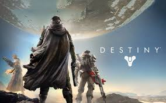
Pie de página
Daxter
Daxter es uno de los protagonistas principales de la saga de videojuegos Jak & Daxter. Es una especie de marsupial (Ottsel: un híbrido de nutria y comadreja, más tarde un Precursor) que acompaña a Jak (el auténtico protagonista) a todas partes subido sobre su hombro. Es un tipo que habla demasiado, es bastante prepotente, presumido, ligon, caradura, y le cuesta callarse la boca cuando debería hacerlo. A pesar de todo, es una persona muy legal y jamás abandona a Jak vaya a donde vaya.
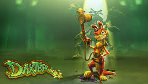
Pie de página
Lumines
Es un videojuego creado por el diseñador de juegos Tetsuya Mizuguchi. El juego salió en el año 2005 para la PlayStation Portable. Éste es un juego basado en patrones de luces y sonidos.
Es un puzzle un tanto similar al famoso Tetris, donde debemos acomodar diferentes piezas para luego eliminarlas. En este caso se deberán acomodar bloques de diferentes colores rotándolas y moviéndolas y así formar grandes rectángulos que desaparecerán. Si los bloques llenan toda la pantalla habremos perdido.
El 11 de octubre de 2005 se confirmó que Lumines había vendido sobre medio millón de unidades desde su lanzamiento original e Japón en diciembre de 2004. Europa ha contribuido con 180,000 unidades desde su lanzamiento en septiembre de 2005, y Norteamérica ha vendido alrededor de 300,000 desde marzo. En Japón Lumines solo ha vendido alrededor de 70,000 unidades.
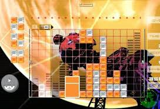
Pie de página
God of war
Es una serie de videojuegos en 3.ª persona creada por SCE Santa Monica Studio y distribuida por Sony Computer Entertainment. Se basa en las aventuras de un semidiós griego, Kratos, quién se enfrenta a diversos personajes de la mitología griega, tanto héroes (Hércules, Teseo, Perseo, etc.) y especies mitológicas (tales como gorgonas, arpías, o minotauros) como dioses griegos (Ares, Poseidón, Zeus, entre otros) y Titanes (como Gaia y Cronos). Aunque el guerrero espartano acostumbra enemistad con la mayoría de los Dioses, recibe ayuda de muchos de ellos, en especial de Atenea.
Los juegos están disponibles para diversas consolas; PlayStation 2, 3 y Portable,vita ,y puede que también en la ps4, más los teléfonos móviles peró descargandose la aplicación PPSSPP,te la puedes descargar en playstore. Se han realizado remasterizaciones de los primeros juegos para jugarse en consolas aún más modernas, por lo cual hasta el día de hoy, seis de los siete God of War están disponibles para PS3, con la excepción de God of War: Betrayal.

Pie de página
Crisis core
Crisis Core: Final Fantasy VII es parte del proyecto "Compilation of Final Fantasy VII", de la compañía de videojuegos Square-Enix, cuyo objetivo es ampliar y completar la historia de Final Fantasy VII videojuego lanzado en 1997 para PlayStation, contando lo acontecido 7 años antes. Crisis Core fue lanzado para la consola portátil de Sony la PSP en formato UMD. Es un videojuego de rol de acción.

Pie de página
Patapon
Patapon es una franquicia de videojuegos para PlayStation Portable que combina los estilos: juego de ritmo y juego de dios. Fue desarrollado por Pyramid, el mismo estudio que creó LocoRoco. Se caracteriza por entornos 2D llenos de detalles con brillantes y coloridos gráficos que contrastan con los simpáticos personajes. La banda sonora fue realizada por Kenmei Adachi, mismo compositor encargado de LocoRoco.
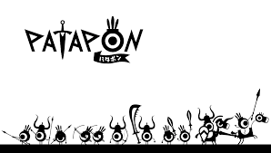
Pie de página
Gears of war 3
Gears of War 3 es un videojuego de disparos en tercera persona, del género survival horror y acción-aventura, desarrollado por Epic Games y publicado por Microsoft Game Studios exclusivamente para Xbox 360. Es la tercera entrega de la serie Gears of War y el juego final en la historia del arco. Se publicó el 3 de noviembre de 2011. El 31 de mayo se dio a conocer una precuela de este juego Gears of War: Judgment.

Pie de página
Halo 4
Halo 4 es un videojuego de disparos en primera persona desarrollado por la filial 343 Industries y distribuido por Microsoft Studios para la videoconsola Xbox 360. Halo 4 es el primero de "la trilogía del reclamador", y el séptimo lanzamiento de la franquicia Halo. Fue anunciado en Electronic Entertainment Expo de 2011 en la conferencia de prensa de Microsoft. Según el presentador de la conferencia, Halo 4 es el primero de una nueva trilogía de juegos dentro de la serie Halo. El juego continúa tiempo después del final de Halo 3, y marca el regreso del Jefe Maestro como personaje jugable. Cortana también aparecerá en el juego. El sitio web oficial se inició poco después de la conferencia de prensa en la E3, y afirma: "Tras los eventos de Halo 3, el Jefe Maestro regresa para cumplir su destino y enfrentarse a un antiguo enemigo que amenaza el futuro del universo entero. Halo 4 marca el inicio de la nueva "trilogía del reclamador", la cual comenzó con su lanzamiento en noviembre de 2012.

Pie de página
Forza Horizon 2
Forza Horizon 2 nos sumerge nuevamente dentro de la mejor fiesta de velocidad regresando al emocionante "Festival Horizon", esta vez tomando lugar en la región sureste de Europa, más precisamente al sur de Francia y al norte de Italia, donde el mapa será tres veces más extenso que el de Colorado, y claramente con una extensión de bellos y alucinantes paisajes realistas para la versión de One. La temática es muy similar a la de la entrega anterior ofreciendo un nuevo sistema de conducción callejera por los paisajes más bellos de Europa.
De nuevo volvemos a adentrarnos en el mundo de un joven anónimo que ha sido invitado al segundo festival "Horizon" en el sur de Francia. Poco a poco el jugador tendrá la oportunidad de conducir máquinas deportivas cada vez más rápidas y exóticas que van desde un simple Volkswagen hasta Supercoches como un Lamborghini. El nuevo sistema de juego permitirá a los Gamers un detallado sistema de multijugador que podrá hacer a todos competir en línea con sus amigos o rivales gracias a la nueva tecnología incorporada en la Xbox One.

Pie de página
Titanfall
Titanfall es un videojuego de acción en primera persona estilo mecha, desarrollado por Respawn Entertainment y distribuido por EA Games para Microsoft Windows, Xbox 360 y Xbox One. Es el primer videojuego de Respawn Entertainment y fue lanzado el 11 de marzo de 2014 en América del Norte y el 13 de marzo de 2014 en Europa.
Los jugadores podrán avanzar a pie como pilotos free-running o pueden estar dentro de un ágil mecha llamado Titan para completar los objetivos del equipo. El videojuego es únicamente multijugador, pero hay características de un jugador como los mapas, la comunicación con otros personajes y la inclusión de personajes no jugables en las batallas.
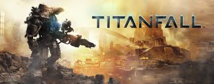
Pie de página
Just cause 2
Just Cause 2 es un videojuego de acción desarrollado por la empresa sueca Avalanche Studios y publicado por Eidos Interactive y Square Enix. Es la segunda entrega del videojuego de 2006, Just Cause, el cual tuvo unas críticas variadas. Igual que su predecesor, su modo de juego es de libertad total.
La acción, así como la trama, se desarrolla en el ficticio archipiélago paradisíaco de Panau. El protagonista es, de nuevo, Rico Rodríguez, el agente más cualificado y peligroso de la Agencia, que es enviado a Panau para eliminar a un agente disidente refugiado en la isla.

Pie de página